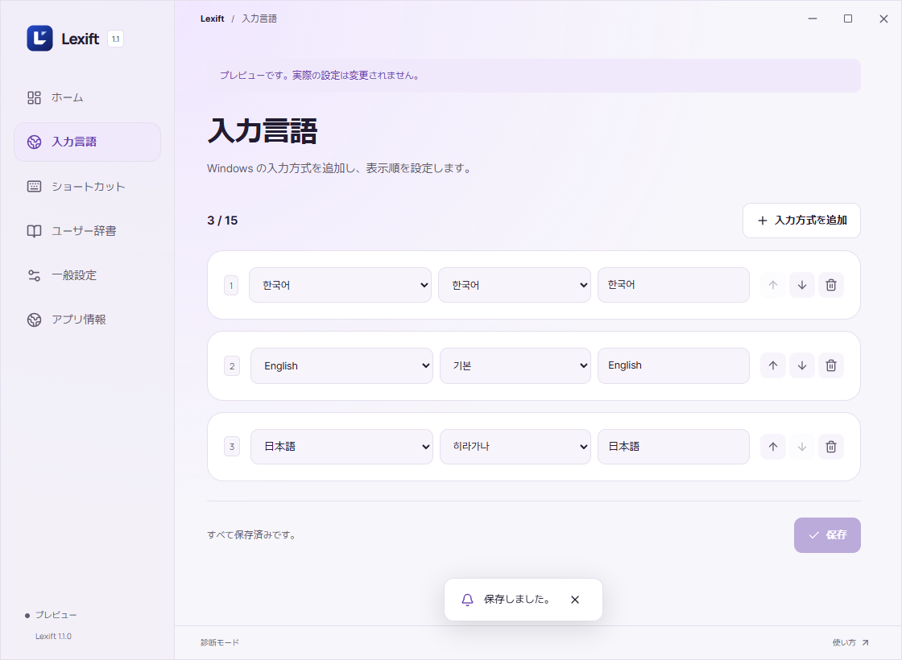
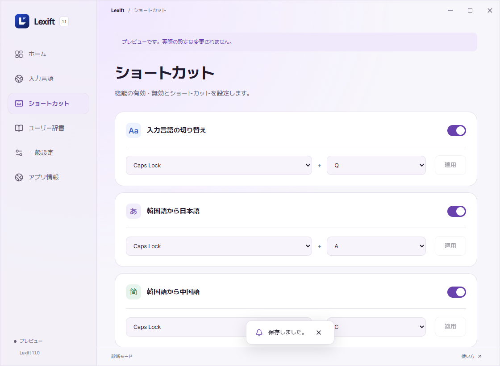
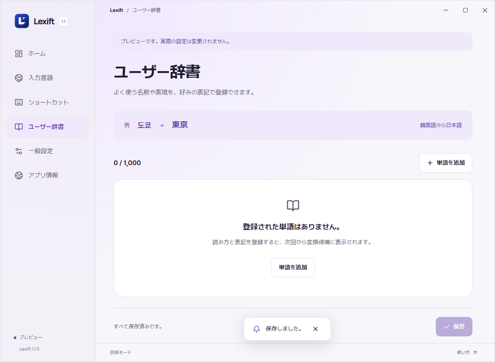

概要

インストール
タスクトレイから Lexift を終了してインストーラーを実行します。Windows に入力方式を追加し、Lexift の入力言語画面で登録します。


入力言語の切り替え
方向キーと Enter、または番号で選択します。

日本語入力
日本語の読みをハングルで入力します。와타시 → 私。もう一度押すとオフ。
↑↓ 移動 / Space または Enter で確定 / 1～9、0 で選択 / Esc で閉じる。
変換をオンにするとハングル入力に切り替わります。

簡体字入力
中国語の読みをハングルで入力します。니하오 → 你好。もう一度押すとオフ。

繁体字と注音符号
繁体字 → 注音符号 → オフの順に切り替えます。중궈 → 中國 / 니하오 → ㄋㄧ ㄏㄠ。注音には声調を付けません。


ピンイン声調
ショートカット画面でピンインの声調を有効にします。英字入力で ke と入力し、Caps + 3 を押すと kě になります。
1～4：声調を指定 / 0：声調を削除。Num Lock の状態に関係なくテンキーも使えます。候補表示中は番号選択が優先されます。


設定

ユーザー辞書
候補にない単語を登録します。キーワード、置換テキスト、言語を入力して保存。例：스미네 / 澄音 / 韓日変換。各行右端のボタンで削除します。


問題と対処
ショートカットが反応しない
通知領域で Lexift が起動しているか確認します。設定で機能を有効にし、「適用」を押します。他のアプリとキーが重なる場合は変更します。
切り替え先の言語がない
Windows の設定で言語と入力方式をインストールし、Lexift の「入力スロット」に登録します。
ハングルを入力しても候補が出ない
変換をオンにし、韓国語入力のハングルモードで入力します。日本語変換には Microsoft 日本語 IME が必要です。入力方式を追加した場合は Lexift を再起動します。
日本語変換エンジンが繰り返し停止する
タスクトレイから Lexift を終了してインストーラーを再実行します。改善しない場合は終了コードを添えてご報告ください。
目的の単語が候補にない
名前や固有名詞はユーザー辞書に登録します。日本語の長音はハイフン (-) で入力できます。例：코-죠- → こうじょう。
Caps + Q で方向キーや Esc が効かない
タスクトレイから Lexift を終了してインストーラーを再実行します。改善しない場合は終了コードを添えてご報告ください。
ピンインに声調が付かない
設定でピンイン声調をオンにします。英字入力で ke と入力し、Caps + 3 を押します。候補ウィンドウを閉じ、声調を付ける音節の直後にカーソルを置きます。
特定のアプリで入力できない
入力欄をクリックし直し、メモ帳でも確認します。管理者として起動したアプリでは、Lexift を終了してから管理者として起動し直します。パスワードなどの保護された入力欄には対応していません。
不具合報告には、アプリ名、Windows のバージョン、再現手順を記載してください。
GitHub Issues ↗